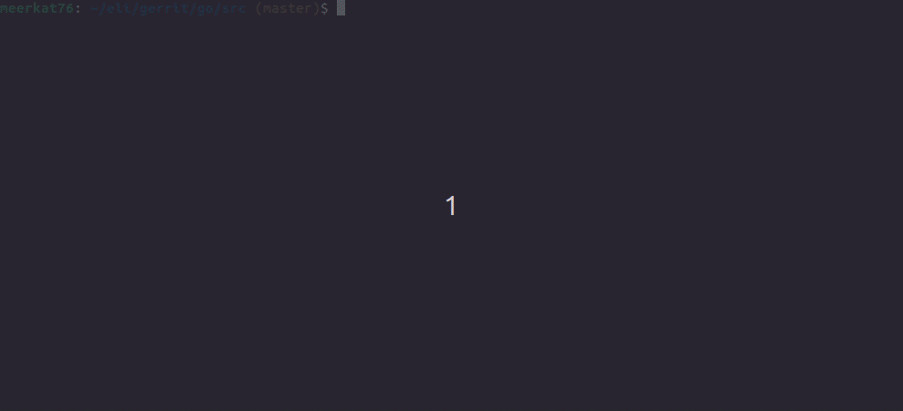

Updated (2023-03-06)
Go has a great, well documented standard library. You may find yourself spending a fairly significant chunk of your Go programming time digging in stdlib docs, which is reasonable to expect at least for novice Go coders.
How do folks look for stuff in the docs? There are several ways:
- Just use https://pkg.go.dev/ -- since its release this site has been improving quite a bit, with symbol search, in-page quick auto-completing search (when pressing 'f'), etc.
- Use Google, which indexes the docs very well.
- https://devdocs.io/ -- I really like this one for many languages / frameworks, and its Go support is great.
But what if you want to stay within the terminal when searching documentation?
Luckily, Go comes with its own private take on man - go doc. So you can just type:
$ go doc regexp.Split
func (re *Regexp) Split(s string, n int) []string
Split slices s into substrings separated by the expression and returns a
slice of the substrings between those expression matches.
[...]
Which is pretty good, with one significant problem. You have to provide the function/type name exactly, including its package. If you don't remember it exactly, that's a problem. Even if you do, it may be fairly long to type in; consider go doc encoding/csv.Reader.ReadAll - that's quite a handful!
I wouldn't be a programmer at heart if I wasn't willing to spend a few hours automating a task that takes 3 extra seconds to perform. So I hacked together an "autocompletion engine" for go doc. Here's an animated GIF showing it in action:
The full code is here. Here's an overview of what's going on.
The main tool is index-doc.go; it takes a path to the Go source directory (which is installed with Go), then goes over all the files found there, extracting the full symbol path of every function, type and variable. Don't panic - Go has a bunch of Go-processing tools built into the standard library, so there's no need to manually parse Go code here. The packages go/parser, go/build and go/doc are doing all the heavy lifting [1].
It then emits a list of these symbols to stdout, which can be piped into a file.
Next, comes one of my favoring Linux command-line tools - fzf. The file with the symbols is piped into it using a Bash function:
gdoc() {
go doc `fzf < $HOME/.gosyms`
}
fzf handles the fuzzy search and autocompletion, and passes the selected result into go doc that displays the documentation. That's it!
Now I can conveniently find all I need in Go's docs without even leaving the terminal, and without remembering package paths and symbol names exactly. Auto-completion works really well for tasks like "wait, what was that function that creates temporary files?" -- just start typing tempf into the menu gdoc pops up and immediately find io/ioutil.TempFile. The tool can be easily adjusted to index my own packages and installed 3rd party packages, as long as they're accessible from go doc.
| [1] | In fact, go doc itself uses the same packages. |